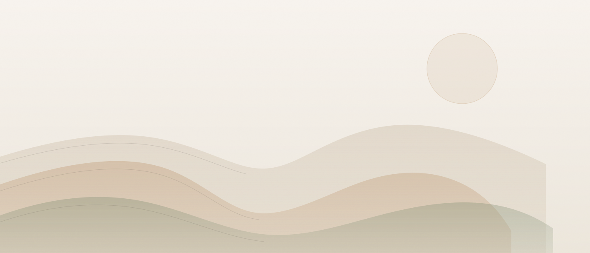
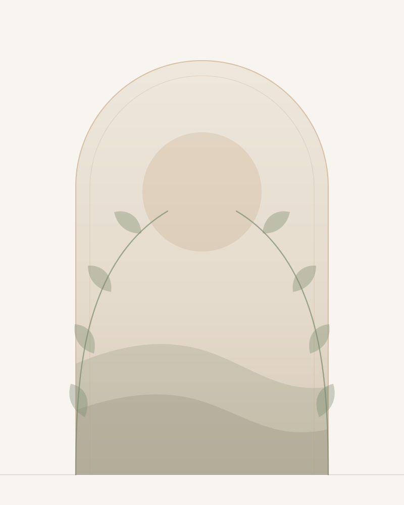
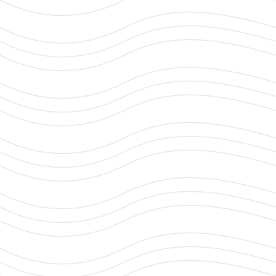

Internal · not linked from the site
Original line art drawn for Cowboy Healthcare — no stock, no external CDN, every piece a few kilobytes of vector that stays sharp at any size. Recolour and resize everything below, then click any piece to copy its markup.
One mark per PT service, drawn on a shared 64×64 grid with a single stroke weight — so a row of them reads as one family, not a bag of clip art.
Section furniture that extends the editorial sprig already on the Motion TV page — dividers, corners and frames to break up long pages.
Full-bleed replacements for the hero photos, built from the palette
itself. ridges.svg is 2 KB against roughly 200 KB for the
Unsplash hero it would replace — and it can never 404 on you.


